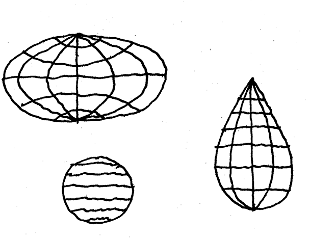

Data shamans

[This piece was first published on [Slow News](https://www.slow-news.com/).]
“This I realized all along:
reason is always
in the wrong.”Giorgio Caproni, Tutte le poesie (Milan, Garzanti 2013) [our translation]
Only a few months ago: despite information about the epidemics coming from China, Italy took too long to react. A few weeks later: despite news coming from Italy, the United States took too long to react. And so on…
How is it that the mountain of data and records elaborated by medical personnel, researchers, national and international agencies can barely be put into action – despite the fact that the products of science definitely shape our age and mind? Which elements in the construction of knowledge prevent it from translating into trust, thus leading us to barter authoritativeness for authoritarianism?
With these questions in mind we start drafting notes, more to ponder them than to solve them.
Let’s start with that word: “construction.” The idea that the facts of science may be constructions (and that, by extension, nature is at least partly artificial) is an expression that mostly horrifies my colleagues. Those thinkers who used this kind of periphrasis, usually in order to avoid being dogmatic in describing the internal mechanisms of how research works, have long been mocked (but rarely read). This perhaps is due to the perceived lack of respect for the scientists’ own practices and beliefs, and relates to one of the founding myths of modern science, that of objectivity. A rearguard battle was undertaken by my peers to safeguard their subject or to ally it with the new emerging disciplines (life sciences, data science, etc.). The latter, for their part, have been happy to assume the reductionist posture that granted physics so many glorious successes – from the prediction of the stars’motion to the collision of elementary particles.
However, we believe that the situation in which we are all involved will change the world of the production of scientific reality in ways that are difficult to imagine. This allows us to consider the present cirumstance under a differrent light. During these paradoxical days of unanimous appeal to “rational unity” (as well as national unity), we propose instead:
- to think actively in terms of “construction of a scientific fact”, rather than “expression of nature”;
- to renounce to authoritarian objectivity, in favour of an authoritative subjectivity;
- to listen to the reasons and the methods of those who think a different way – not only to create “collaborations”, but “co(n)-fusion”.
The first easy observation is that COVID-19 is not a “fact of nature”, but the product of our interaction with many other non-human actors (the virus, the bat, the sky flown over by low-cost airlines etc.), often characterized by industrial practices of appropriation of the biosphere that claimed their legitimacy using the scientific discourse. But let’s leave this point aside.
The most compelling consideration for us is offered by the global confusion in finding and interpreting valid information about the virus. We certainly do not lack data, nor semi-automated tools of analysis – these latter coming with a profusion of narratives aimed at inspiring the impression of control. Rather, the availability of such databases, ranging in kind from personal mobility to gene sequences and loftily made available to the community, reveals a basic impotence: the inability to involve all or most of humanity in one or more mapping projects.
For example, the data visualizations of the Nextstrain project, which track the virus’ phylogenisis, are truly impressive. And let’s make it clear: continuous sequencing is essential to monitor potentially pathogenic mutations in order to identify a better therapeutic response. The question though is: which institution or organisation can be relied upon to ensure that every small hospital in northern Italy will diligently back-trace and sequence the RNA, thereafter providing data to this particular database? The risk is that, by remaining sketched out or incomplete, this public database will allow to make improper extrapolations. For example the search for “RNA-0”, which reproduces on the scientific side the same mass neurosis in the search for “patient-0”. In this way we risk to no longer be able to distinguish scientific discussion from the bar-room talk which takes place on national newspapers on a daily basis.
The abuse or misuse of Nextstrain data are just one example, but there are many databases, far less accurate than Nextstrain, hired like recruits in a war: rough, cobbled together, sent on a misson without a clear hope to return home – often phantom deliverables useful to tickle the fantasies of some institutions’ bureaouctrats eager to finance scientific research, yet often unable to distinguish the latter from toothpaste, or from a financial product.
Even if well collected, sharing data in the name of the sacrosanct but controversial “open science” poses methodological dilemmas. Just as one can see mythological figures by obsessively looking at the stars, so too one can find patterns by persistently rummaging through a database. These practice is excellent to formulate hypotheses, but these latter then need to be supported by independent procedures and fresh data. Looking back at the same slice of sky at each turn of the sun is not enough: the reiterated and individual use of the same data to draw conclusions or to make a bet depletes their value. This is just one of the many statistical fallacies from which no self-regulatory system is protecting us, thus leading us to an astrology, rather tan an astrophysics of the virus.
In short, it has never been more apparent than today that so-called “nature” does not speak by itself: it must be questioned, and the quality of the answer depends on the structure of the question itself. Indeed, much part of the answer is in the question. Where does the virus start? How does it spread? What agents can counteract it? Which agents can mimic it and trigger an immune response? What is its infectivity/morbidity/virality? Is it eradicable? Each of these questions originates from a different model of reality, which we apply as if it were a photographic filter. Although we find the respective cognitive practices under the umbrella of “science”, their intersection is often sparse (a virologist and an epidemiologist have much less in common than is usually understood).
Moreover, the questions we are usually exposed to are not the only ones possible. An Amerindian shaman, in his collective of subjective practices – dances, infusions, chants, skin incisions, etc.. – faced with an unknown “spirit” might ask himself: What does he want from me? What can I give him? And what can I receive from him? How can I co-exist with it? As abstruse as they may seem to us, these questions may have a full place in medicine. For example, the day when the disease becomes endemic and the vaccine is late, we have to look for practices and tools that can be defined “convivial” – an adjective with which the critic of modernity Ivan Illich (who refused an impossible return to the past) tried to combine technological advancement with the needs of a communities. These latter, nowadays, also include non-human actors. Think of the competent medical professional: he or she is juggling with automated diagnostic tests, interpersonal conversations with the patients and people close to them, streams of ministerial data, and many ritual practices that mark the administration of health. They look much more like a data-shaman rather than a data-scientist. This is as far as it can get from the mirage of the “scientific method” and of replicability – yet another founding myth of our tribe.
Formulating questions, articulating sensible hypotheses, and – there we are! – “building” scientific facts (or factoids: for there is no intrinsic difference between the two) is the main task of the scientific community. This is in direct oppostion with the idea of the single “hero scientist” who fights against adversity to assert the truth – a figure of intellectual and moral conduct laregly created by the media. The question will receive as clear an answer as the question is more serious, stronger, needed: that is, “true” in the sense that it is shared by a community that proved its integrity. Any experimental physicist belonging to those huge collaborations that that work on high-energy-physics experiments knows well that it is collegiality that guarantees the credibility of a discovery, not its intrinsic truth. A sociological criterion, not a scientific or metaphysical one.
Thinking in terms of construction of a scientific fact puts us in the disposition to collectively organize the context in which a stable consensus can be formed, and not produce the content itself, be it further data or an elaboration of those that already exists. Now that so many of us are involved in data analysis projects, let us remember that the matter of our inquiry reflects our own question. At the same time, the question we ask reflects our aspirations, ideologies, expectations, as individuals or as members of society. What form should institutions take to funnel our desire for knowledge, while preventing us from committing the sin of pride?
To conclude. Let us internalize the fact that science is the factory of perception of a “nature” that has never been more blatantly hybrid with the human: this is our own form of empowerment. Asking ourselves this question is a tool to prevent our discipline from falling prey to the cynicism of those who have never asked these fundamental questions, and are already putting the right blinker: proposing themselves for global governance projects based on supposedly “objective” data. If you meet these people, our advice is to head in the opposite direction.